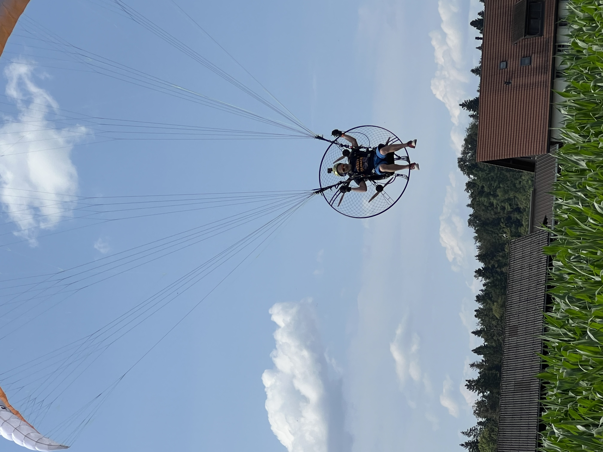

Yves Hörler

Summary
Die digitale User Experience entschiedet über Erfolg oder Misserfolg.
Mein Anspruch ist es deshalb Customer Journeys zu schaffen, die einen
wirklichen und spürbaren Mehrwert bieten. Treu nach dem Motto:
Get together – grow together! Einen nachhaltigen Footprint hinterlassen –
das ist mein Ziel.
Education
- Marketingmanager HF (2009-2012)
Work Experience
-
Head of Technology and AdTech - STREETLIFE Media AG
Februar 2023 - heute
- Fachliche & technische Verantwortung für streetlife.ch
- Koordination von technischen Dienstleistern und internen Ansprechpartnern (Stakeholder
Management)
- Konzeption & Realisierung der Publishing Plattform (Aufbau und konzeptionelle Weiterentwicklung)
- Release- und Qualitätsmanagement
- Aufbau und Optimierung der Guidelines (Frameworks und Guidance)
- Laufende Optimierung UX zur Steigerung der Onsite Kennzahlen
- Verantwortung über sämtliche Search Engine Optimization Massnamen
-
Lead Marketing - TRIQ by sporttec ag
Mai 2022 - Januar 2023
- Konzeption der Performance Marketing Strategie und Umsetzung der Massnahmen in Apple Search Ads, Google Ads, Social Media Ads. Reduktion des CPI um 72% auf $6.30 innerhalb eines Monats.
- Verantwortlich für die Profit & Loss Rechnung des Marketings
- Konzeption und Umsetzung Retention mittels Push und inApp Notifications. Reduktion der Churn Rate Trial to Paying Customer um 20%
- Konzeption und Umsetzung des Tracking sowie der Attribution mittels Appsflyer
- Planung und Umsetzung von A/B Testings in Apple App Store.
- Koordination der Agenturen für App Store und Search Engine Optimization
Skills
- Product Ownership ⭐️⭐️⭐️⭐️⭐️
- HTML Developing ⭐️⭐️⭐️⭐️
- Scrum Methodology ⭐️⭐️⭐️⭐️⭐️
Other